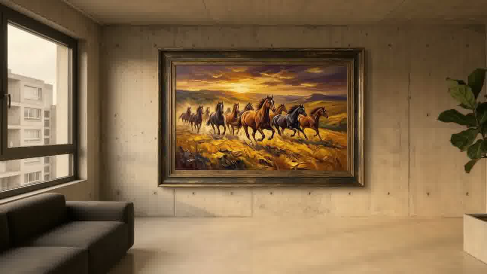

El Vacío Cotidiano
Estructuras de concreto que esperan una historia.
En medio de la sobriedad geométrica y la monotonía urbana, los espacios habitables aguardan un punto de fuga que despierte su alma.
Desliza para continuar el recorrido
En medio de la sobriedad geométrica y la monotonía urbana, los espacios habitables aguardan un punto de fuga que despierte su alma.
Líneas depuradas, concreto pulido y luz natural difusa. Un muro silencioso preparado para convertirse en el epicentro visual del hogar.
La materia cobra vida: empastes de textura táctil, pigmentos minerales y una energía indómita que transforma la frialdad en un santuario artístico.
Colección Óleo & Arquitectura Contemporánea • Edición 2026

Sintetizador procedural de calidez espacial y textura armónica.
"Esta pieza nace del diálogo entre el orden racional del concreto y la pulsión orgánica del caballo salvaje. Los empastes gruesos de óleo mineral absorben y refractan la luz del entorno, transformando cualquier estancia sobria en un portal vivo de fuerza y calidez."
Completa tus datos para coordinar reserva, inspección o envío internacional con nuestro curador.